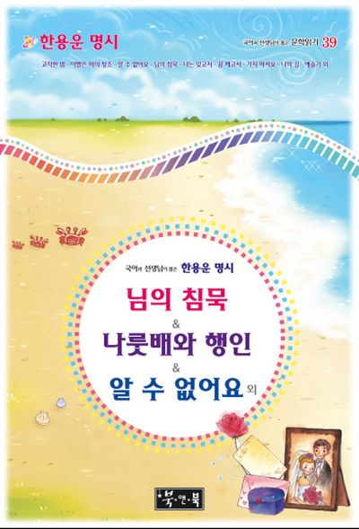

백담사 만해기념관
전화 033-462-6969
이메일 admin@manhaemusan.org
문학관 소개
소개
만해기념관은 한국을 대표하는 민족 시인이자 독립운동가인 위대한 사상가 만해 한용운을 연구하고, 자료를 보존, 후대에 교육하여, 그 정신을 계승하고자 설립된 국가지정 현충시설이다.
전시자료
만해 한용운의 저서 『조선불교유신론』, 『불교교육 불교한문독본』, 『불교대전』, 『정선강의 채근담』 등과 스님이 직접 주재한 잡지 《유심》, 《불교》 등의 문헌, 세계지리와 서양철학을 접했던 『영환지략』, 『음방실문집』이 전시되어 있다. 『님의 침묵』초간본과 백여종의 판본을 전시하고 있다. 만해 문학 관련 연구 저서 및 논문, 만해의 친필 유묵, 친필 서한 등 중요 자료를 전시하고 있다. 1962년 정부가 추서한 대한민국 건국공로 최고훈장인 대한민국장이(훈기번호 제 25호) 전시되어 있다.
문학관 연혁
‘만해사’, ‘만해박물관’, ‘만해학교’와 ‘문인의 집’ 개관
백담사에서 시행해온 만해축제를 만해마을에서 열며 확대발전
진행 프로그램
백담 순례길 걷기
만해 한용운 선사와 무산 조오현 선사의 평화·생명 사상과 문학정신을 기리는 걷기 행사이다. 만해마을부터 백담사까지 내설악 백담계곡의 아름다운 길을 시인들과 함께 걷는다.
- 일시: 2025년 9월 13일
- 참가비: 무료
개관 정보
개관: 09:00~17:00
휴무일: 매주 월요일 / 1월 1일 / 설·추석 당일이다
위치
찾아가는 길
- 강원도 인제군 북면 백담로 746 만해기념관지하철 8호선 산성역(2번 출구)-산성종점까지 버스이용
산성역(2번 출구)-9번, 9-1번(주말 운행), 52번 버스 승차(산성좀점 하차)-남한산성 남문주차장 옆길로 120m 거리에 만해기념관 위치
님의 침묵
임에 대한 영원한 사랑과 이별 후의 슬픔, 재회에 대한 희망, 잃어버린 조국에 대한 그리움과 희망 등 해석에 따라 다양하게 읽힌다.

한용운의 채근담 강의
권력과 물질에 대한 욕망의 헛됨을 꼬집으며 어떻게 살아가야 할 것인가에 대한 물음을 서문에 제기한다. 그리고 인생을 살아가는데 있어서 이를 슬기롭게 헤쳐 나갈 방향과 인간으로서 지켜야 할 법도, 삶의 목적을 제시해주고 있다.
한용운 명시: 님의 침묵, 나룻배와 행인, 알 수 없어요 외
나룻배와 행인의 관계를 통해 님을 향한 희생적이고 헌신적인 사랑을 노래한다.